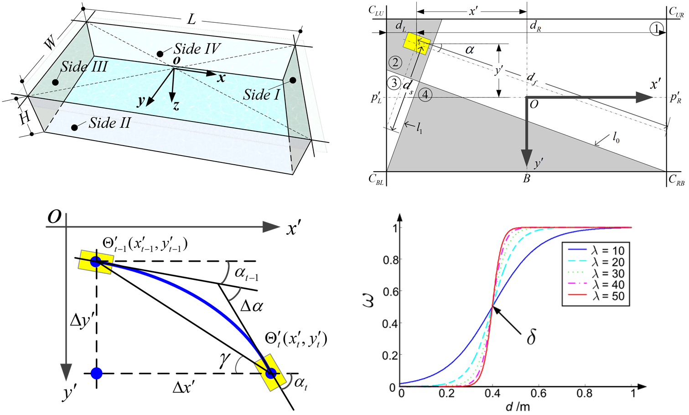
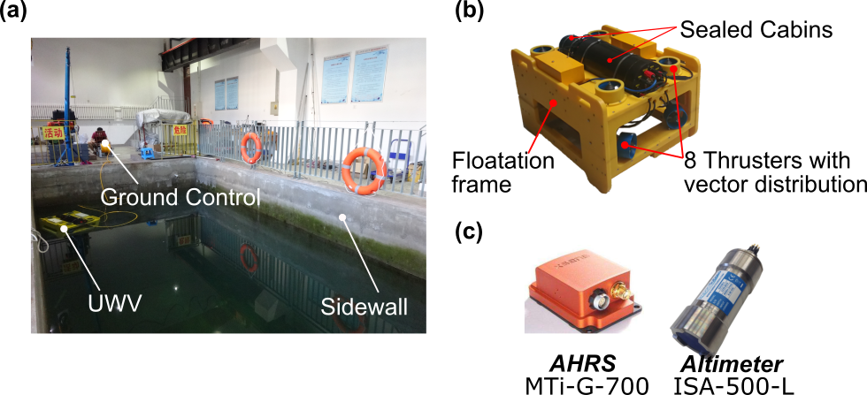
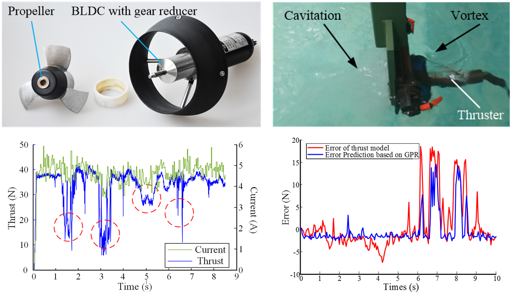
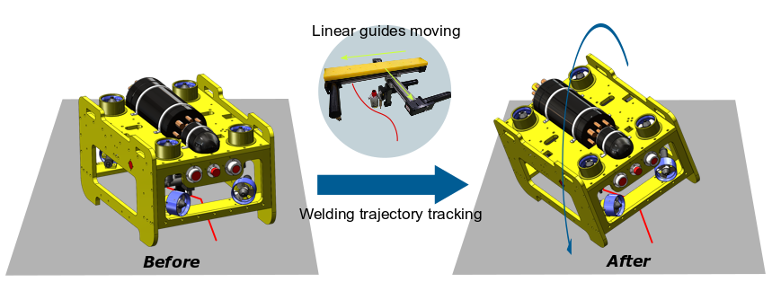
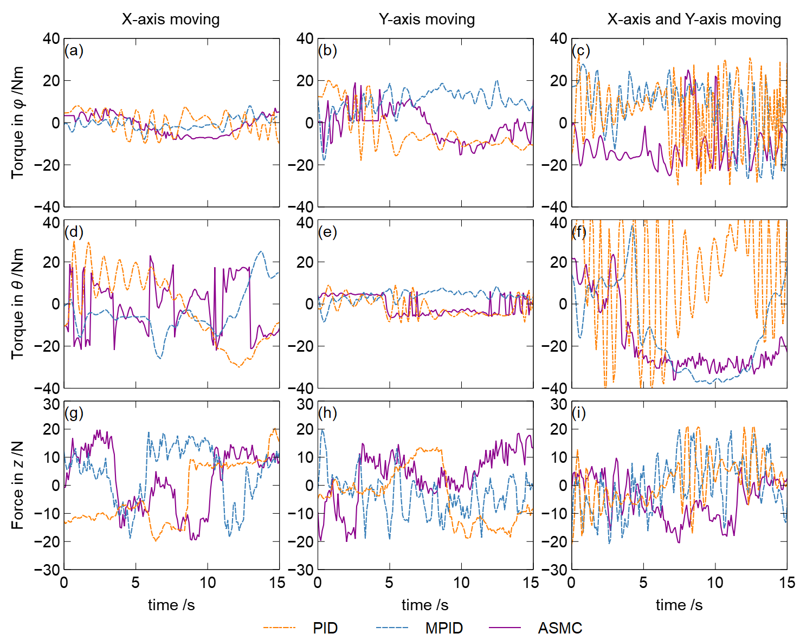

Overview
As an important part of the nuclear power plant, the nuclear power pool has the function of cooling and storing nuclear fuel. Once nuclear leakage occurs, it will lead to a serious nuclear accident. The underwater welding vehicle can repair the pool with great efficiency to prevent nuclear leakage. Therefore, it is of great significance to carry out research on key technologies of underwater welding vehilce for spent fuel pools of nuclear power plants.
In this thesis, according to requirements of the task, an underwater welding vehile by Harbin Institute of Technology (HITUWV) is designed for crack welding in nuclear power pool. The overall scheme of HITUWV are proposed which is composed of the mobile system, the welding system and the control system, respectively. On the basis of the abovementioned research, a prototype of HITUWV is developed. The experiments of mobile system performance and welding system performance are carried out which validate the reasonability of the system design of HITUWV.
In order to realize underwater localization of HIUWV in nuclear power pool and other indoor restricted structured water areas, an underwater localization approach which combining the information of attitude and heading reference system (AHRS) and underwater altimeter is proposed. a multi-region division location (MRDL) algorithm is presented, which utilizes AHRS carried by HITUWV and the information of two underwater altimeters to calculate the location of HITUWV. Then, considering the influence of sensor errors and boundary effect, the MRDL algorithm is optimized, so that the algorithm can meet the practical application. The accuracy and robustness of the MRDL are verified by simulations and experiments.


In order to realize thrust prediction under quasi-cavitaition when the underwater thrusters working near water surface, a novel quasi-cavitation thrust prediction approach is proposed. the mechanism of quasi-cavitation is analyzed, and Bayesian estimation based thrust model(BETM) is established to obtains the relationship between thrust, rotation speed and input current. Then, a novel thrust loss prediction model based on Gaussian process(QCTM-GP) is established which considering thrust loss caused by quasi-cavitation, the BETM and QCTM-GP are used to realize quasi-cavitation thrust prediction. The effectiveness of the quasi-cavitation thrust prediction approach is verified via experiments.

A centorid-variability model based adaptive sliding mode controller is proposed to compensate the centroid variability of HITUWV caused by the movements of the 3-DOF manipulator. The centroid variability model (CVM) of HITUWV is established to obtain the centroid variability characteristics of HITUWV accurately.A centroid-variability model based adaptive sliding mode controller (CVM-ASMC) is designed to realize high accurate compensation of centroid variability. The accuracy and stability of CVM-ASMC are verified by experiments.


A novel LS-QP-Switch redundant thrust allocation strategy is proposed to solve the thrust allocation problem caused by vector distribution of multi-thrusters on HITUWV. By establishing the mathematical model of vector propulsion system, the relationship between the thrust of multi-thrusters and the 6-DOF resultant force acting on HITUWV is obtained. On this basis, LS-QP-Switch redundant thrust allocation strategy is proposed which can realize energy-optimal thrust allocation under the constraints of real-time performance and thrust saturation. The effectiveness of the proposed LS-QP-Switch thrust allocation strategy is demonstrated by Simulations and experiments.